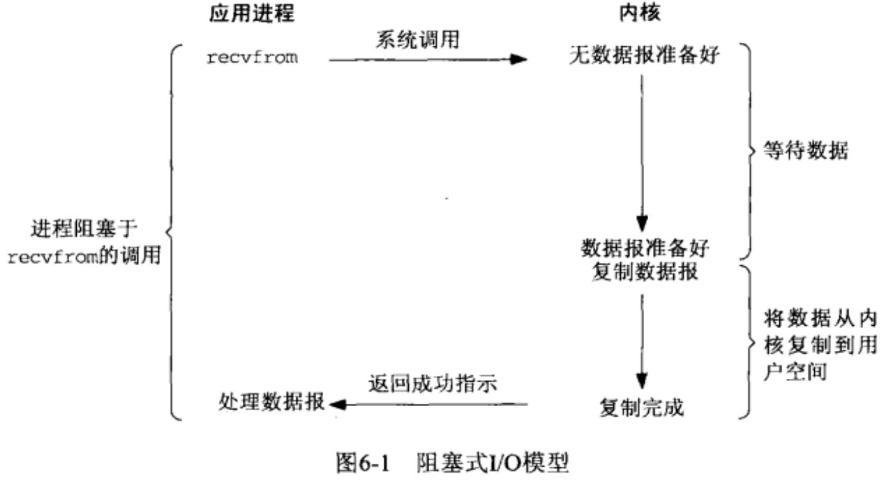
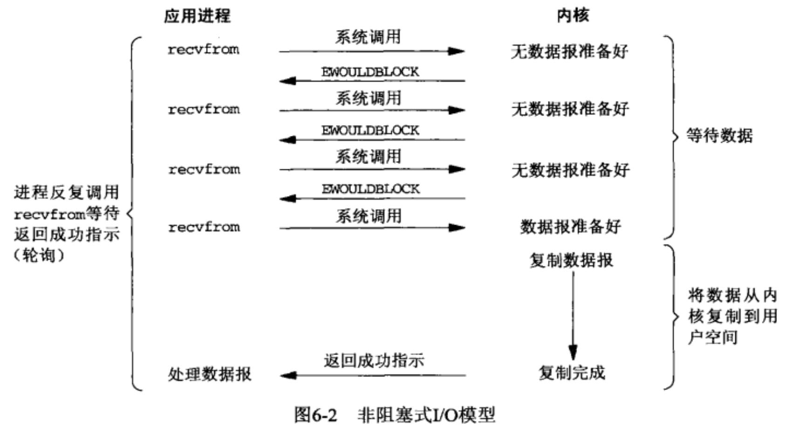
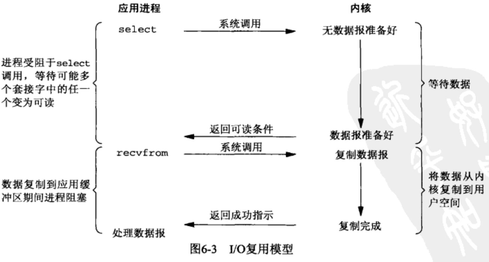
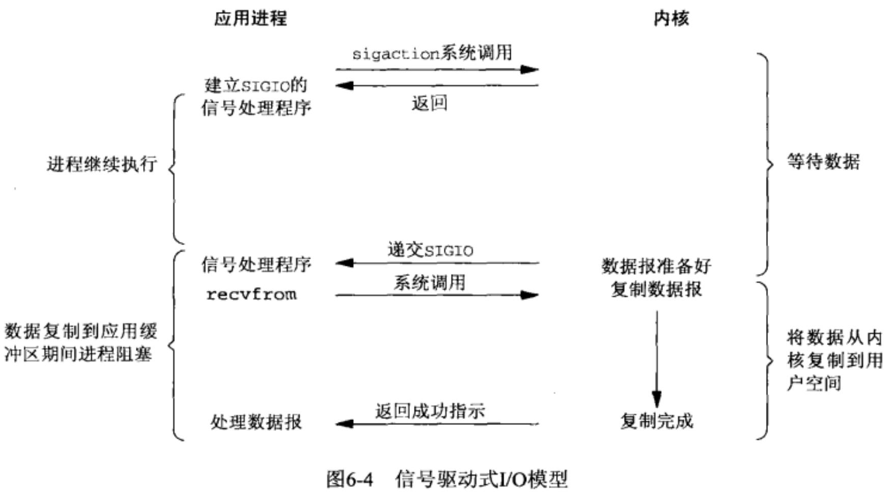
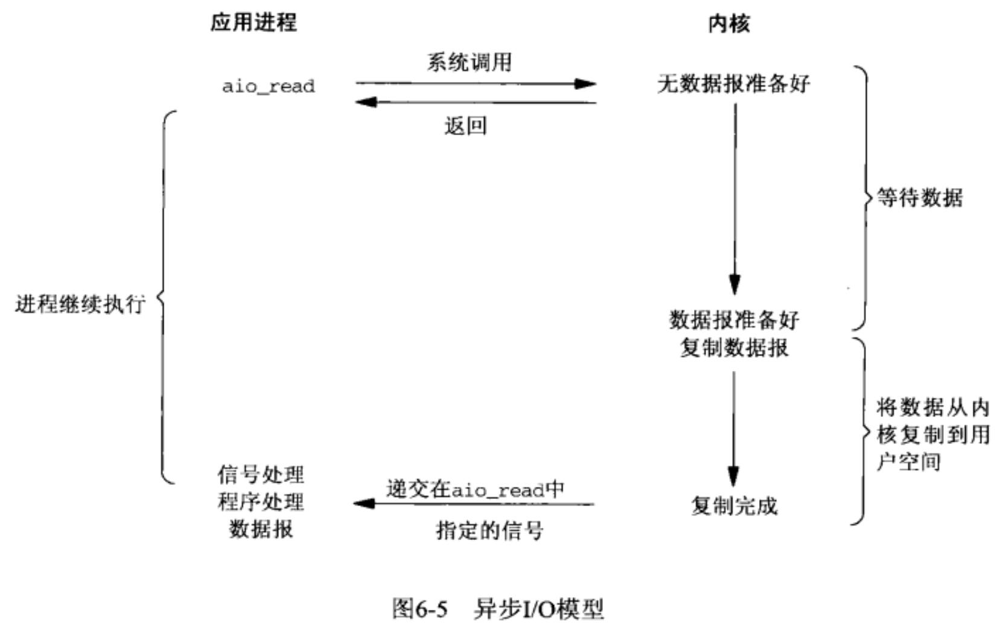
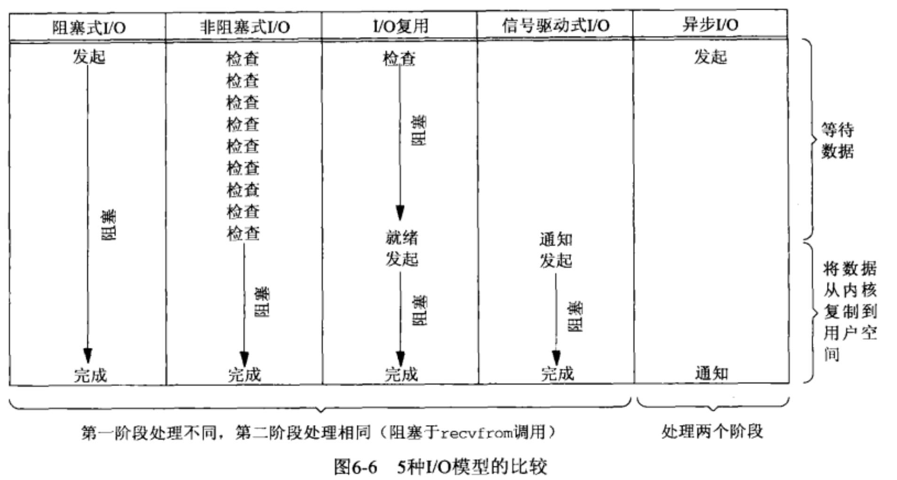

学Netty之前，得先了解Uinux中的5种I/O模型，Java的3种I/O模型；
本文主要介绍《UNIX网络编程.卷1#6.2节》一书中提到的Unix中的5种IO模型：
- 阻塞式I/O（blocking I/O）
- 非阻塞式I/O（non-blocking I/O）
- I/O复用（I/O multiplexing）
- 信号驱动式I/O（signal driven I/O）
- 异步I/O（asynchronous I/O）
通常一个 socket 上的输入操作包含2个阶段：
- 等待数据准备好：通常涉及等待数据从网络中到达，当所等待分组到达时，它被复制到内核中的某个缓冲区；
- 从内核向进程复制数据：数据从内核缓冲区复制到应用进程缓冲区。
上述5种IO模型就是在这2个阶段上各有不同的情况。
通过本文，搞清楚什么是同步I/O，异步I/O，阻塞I/O，非阻塞I/O，他们之间有什么区别和联系？
I/O
我们常说的IO，指的是文件的输入和输出，但是在操作系统层面是如何定义I/O的呢？到底什么样的过程可以叫做是一次I/O呢？
拿一次磁盘文件读取为例，我们要读取的文件是存储在磁盘上的，我们的目的是把它读取到内存中。
可以把这个步骤简化成把数据从硬件（硬盘）中读取到用户空间中。
用钓鱼来解释I/O
钓鱼的时候，刚开始鱼是在鱼塘里面的，我们的钓鱼动作的最终结束标志是鱼从鱼塘中被我们钓上来，放入鱼篓中。一次完整的钓鱼操作，是鱼从鱼塘中转移到鱼篓的过程。
I/O映射成钓鱼的示例说明：
- 钓鱼：I/O
- 鱼：文件
- 鱼塘：硬盘
- 鱼钩：内核空间
- 转移：copy
- 鱼篓：用户空间
阻塞式I/O（blocking I/O）

- 上图为UDP示例（UDP与TCP相比，数据准备好读取的概念比较简单，要么整个数据报已经收到，要么还没有）
- 进程调用
recvfrom，其系统调用直到数据报到达且被复制到应用进程的缓冲区中或者发生错误才返回，最常见的错误是系统调用被信号中断； recvfrom成功返回后，应用进程开始处理数据报；
阻塞式IO的特点就是在I/O执行的两个阶段都被阻塞了：阻塞等待数据，阻塞复制数据；
用钓鱼来解释IO：1根竹制鱼竿，静坐等待鱼儿上钩。
非阻塞式I/O（non-blocking I/O）

- 当对一个非阻塞 socket 执行读操作时，如果内核中的数据还没有准备好，那么它并不会阻塞用户进程，而是立刻返回一个
EWOULDBLOCK错误； - 如果内核中有数据准备好了，它会立即将数据拷贝到用户内存，并成功返回。
- 由于非阻塞I/O在没有数据时会立即返回，故用户进程通常需要循环调用
recvfrom，不断地主动询问内核数据是否ready，这称之为轮询（polling）。
非阻塞式IO的特点是在I/O执行的第一个阶段不会阻塞线程，但在第二阶段会阻塞。
轮询的缺点是耗费大量CPU时间，不过这种模型偶尔也会用到，通常是在专门提供某一种功能的系统中才有；
用钓鱼来解释：1根竹制鱼竿，时不时来看看是否有鱼儿上钩。
I/O复用（IO multiplexing）

I/O复用(I/O multiplexing)，也称事件驱动IO(event-driven I/O)，就是在单个线程里同时监控多个socket，通过select或 poll轮询所负责的所有socket，当某个socket有数据到达了，就通知用户进程。
- I/O多路复用多了一个select函数，多个进程的IO可以注册到同一个
select上，当用户进程调用该select，select会监听所有注册好的I/O，如果所有被监听的I/O需要的数据都没有准备好时，select调用进程会阻塞。 - 当任意一个I/O所需的数据准备好之后，
select调用就会返回，然后进程在通过recvfrom来进行数据拷贝，此时进程阻塞在I/O执行的第二个阶段。
如上图整个用户进程其实是一直被阻塞的，但I/O复用的优势在于可以等待多个描述符就绪（并发）。
所以，I/O复用的特点是进行了二次系统调用，进程先阻塞在select/poll上，再阻塞在读操作的第二个阶段上。
I/O复模型支持并发，可以提高效率，机制类似多线程版本的阻塞I/O；
用钓鱼来解释：多根竹制鱼竿，时不时来看看哪根鱼竿有鱼儿上钩。
信号驱动式I/O（signal driven I/O）

信号驱动式I/O(signal-driven I/O)，就是让内核在描述符就绪时发送SIGIO信号通知用户进程。
- 开启 socket 的信号驱动式I/O功能，然后通过
sigaction系统调用注册SIGIO信号处理函数 ，该系统调用会立即返回，不会阻塞用户进程。 - 当数据准备好时，内核会为该进程产生一个
SIGIO信号，这时就可以在信号处理函数中调用recvfrom读取数据了。
所以，信号驱动式I/O的特点就是在等待数据ready期间进程不被阻塞，当收到信号通知时再阻塞并复制数据。
用钓鱼来解释：1根鱼儿上钩会自动提醒的鱼竿，不用人看着鱼竿来确认是否有鱼儿上钩。
异步I/O（asynchronous I/O）

异步I/O(asynchronous IO)其实用得很少，在Linux 2.5 版本的内核中首次出现，在 2.6 版本的内核中才成为标准特性。
- 用户进程在发起
aio_read操作后，该系统调用立即返回，然后内核会自己等待数据ready，并自动将数据拷贝到用户内存。 - 整个过程完成以后，内核会给用户进程发送一个信号，通知I/O操作已完成。
异步I/O与信号驱动式IO的主要区别是：信号驱动式I/O是由内核通知我们何时启动一个I/O操作，而异步I/O是由内核通知我们I/O操作何时完成。
所以，异步I/O的特点是I/O执行的两个阶段都由内核去完成，用户进程无需干预，也不会被阻塞。
用钓鱼来解释：高科技钓鱼设备，自动感应鱼儿上钩，自动收线，自动继续垂钓。
各种I/O模型的比较

可以看出，前4种模型的主要区别在于第一阶段，因为它们的第二阶段是一样的：都是阻塞于recvfrom调用，将数据从内核复制到用户进程缓冲区。相反，异步I/O模型在这2个阶段都要处理，从而不同于其他4种模型；
同步I/O和异步I/O对比
POSIX是这样定义的：
- 同步I/O操作：A synchronous I/O operation causes the requesting process to be blocked until that I/O operation completes. 同步IO操作导致请求进程阻塞，直到IO操作完成。
- 异同步I/O操作：An asynchronous I/O operation does not cause the requesting process to be blocked. 异步IO操作不导致请求进程阻塞。
阻塞I/O和非阻塞I/O
上面介绍阻塞式IO模型、非阻塞式IO模型时已经说明了两者的区别：
- 阻塞I/O会一直阻塞用户进程直到操作完成；
- 非阻塞I/O在内核的数据还没准备好的情况下会立即返回；
回到一开始问题：同步I/O，异步I/O，阻塞I/O，非阻塞I/O，他们之间有什么区别和联系？
上面定义中的I/O operation是指真正的I/O系统调用，比如recvfrom，
所以阻塞式I/O模型、非阻塞式I/O模型、I/O复用模型、信号驱动式I/O模型都属于同步I/O，只有异步I/O模型是属于POSIX定义的异步I/O；
术语
POSIX（Portable Operating System Interface）可移植操作系统接口，是IEEE为要在各种UNIX操作系统上运行软件，而定义API的一系列互相关联的标准的总称；recvfrom函数：本函数用于从（已连接）套接口上接收数据，并捕获数据发送源的地址。select函数：本函数允许进程指示内核等待多个事件中的任何一个发生，并只在有一个或多个事件发生或经历一段指定的时间后才唤醒它；aio_read函数：